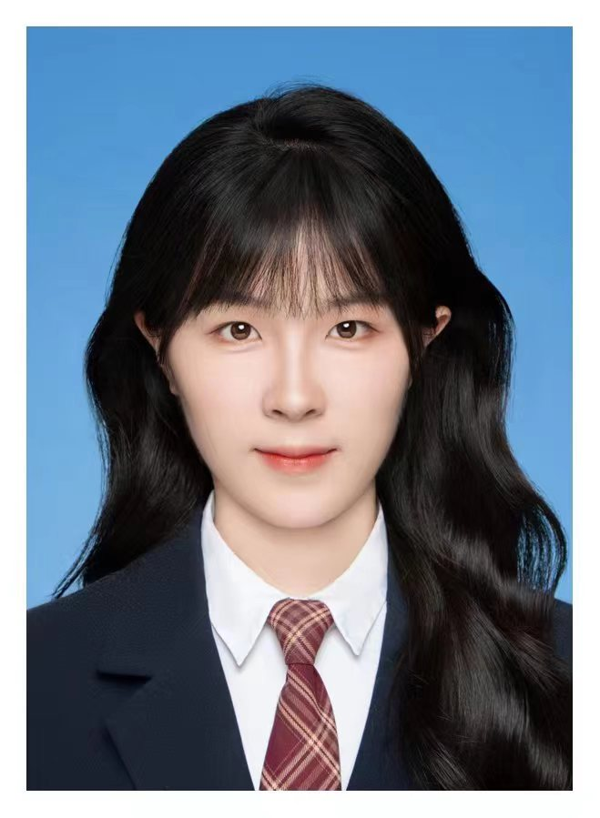
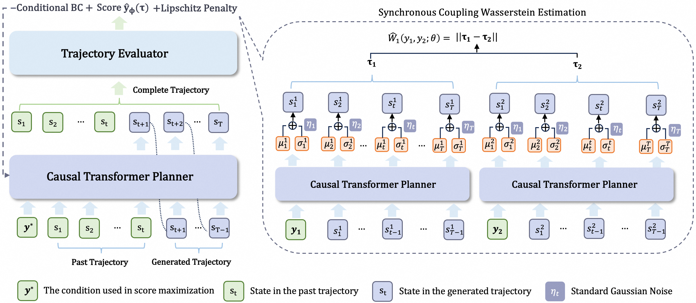
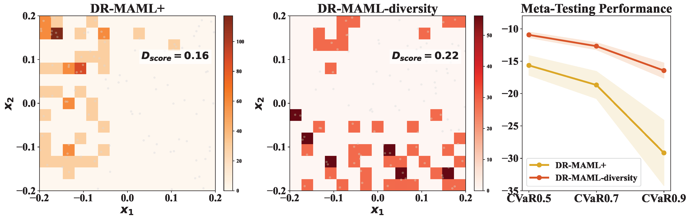
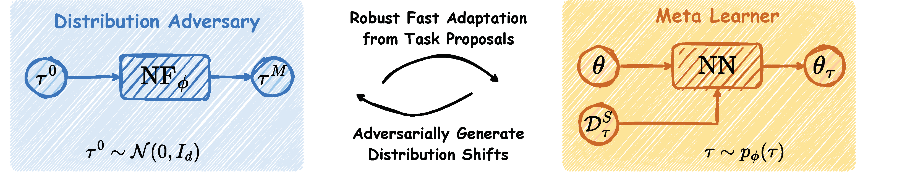
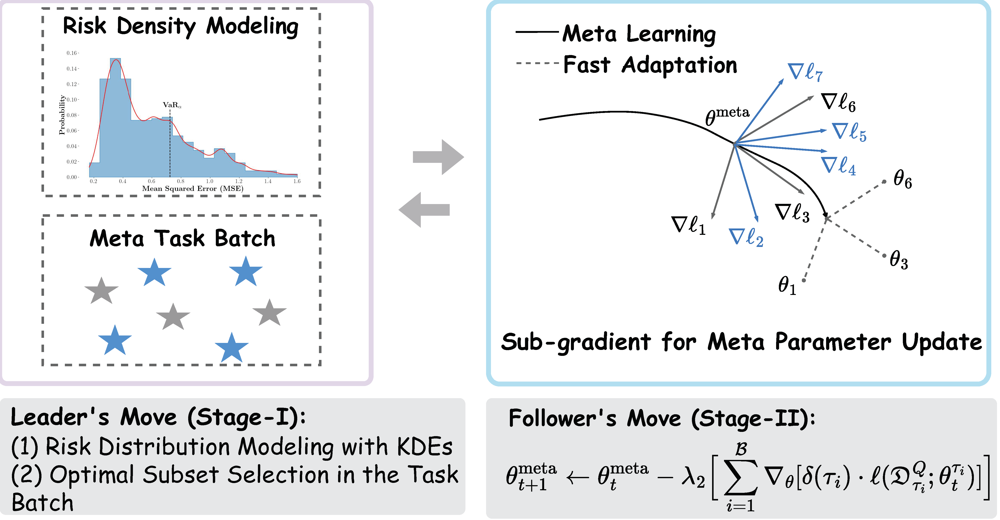
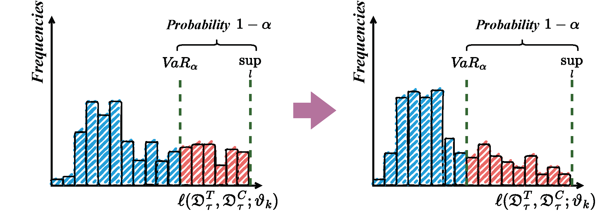
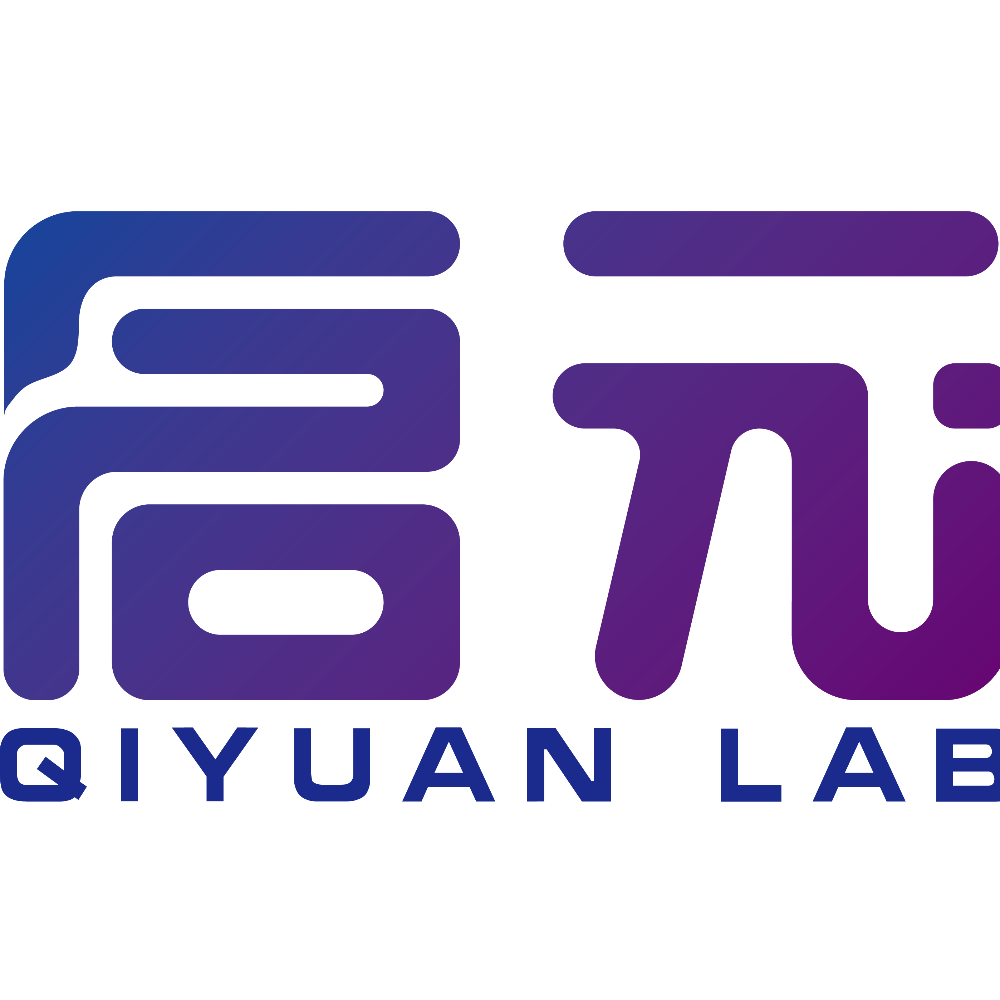

Yiqin Lv 吕怡琴
Ph.D. Candidate @ NUDT | Joint Student @ Tsinghua University
About Me
I am a fourth-year Ph.D. student in Mathematics at the National University of Defense Technology (NUDT), advised by Prof. Zheng Xie and Associate Prof. Qi Wang. I also spent a year as a joint Ph.D. student at the Department of Automation, Tsinghua University, under Prof. Xiangyang Ji.
I received my B.Sc. degree from Tianjin Normal University in 2020 and my M.Sc. degree from National University of Defense Technology in 2022. My research interests lie in Generative AI, Probabilistic Meta-Learning, Natural Language Processing, and Large Decision-Making Models.
I am open to collaborations and discussions.
Selected Papers
* indicates equal contribution.

Enhancing Generative Auto-bidding with Offline Reward Evaluation and Policy Search
ICLR 2026 Oral CAAI/CCF-A
A generative auto-bidding framework using offline reward evaluation and policy search for advertising optimization.

Tail Task Risk Minimization in Meta-Learning from Theoretical Advances to Practical Strategies
IEEE TPAMI 2026 CCF-A Journal IF=18.6
Theoretical and practical advances on tail task risk minimization for more robust meta-learning.


Theoretical Investigations and Practical Enhancements on Tail Task Risk Minimization in Meta Learning
NeurIPS 2024 CAAI/CCF-A
Deeper theoretical analysis and practical improvements for tail risk minimization in meta-learning.

A Simple Yet Effective Strategy to Robustify the Meta Learning Paradigm
NeurIPS 2023 CAAI/CCF-A
A practical and theoretically-supported strategy to make meta-learning more robust.

Multi-scale Graph Pooling Approach with Adaptive Key Subgraph for Graph Representations
CIKM 2023 CCF-B
Multi-scale graph pooling with adaptive subgraph selection for improved graph-level representations.
Experience
Alibaba · Taobao & Tmall Group
Intelligent Algorithm Products Division, Ad Algorithm Team (广告算法-全站推广). Focused on generative auto-bidding algorithms. Co-first-authored AIGB-Pearl, accepted at ICLR 2026 Oral.

Qiyuan Lab 启元实验室
Intelligent Foundations Research Center. Focused on optimizer design and its applications.
Selected Awards
- Outstanding Graduate, NUDT | 国防科技大学校级优秀毕业生 (2022)
- NUDT Qiangji First-Class Scholarship | 国防科技大学强基一等奖学金 (2022)
- Outstanding Student, Tianjin Municipality | 天津市优秀学生 (2020)
- First Prize, National College Mathematics Competition | 全国大学生数学竞赛一等奖 (2019)
- National Scholarship | 国家奖学金 (2018)
- See CV for full list.
Services
Conference Reviewer
NeurIPS; ICLR; ICML; AAAI; AAMAS; TNNLS.
Invited Talks
RLChina 2024 — Robust Fast Adaptation from Adversarially Explicit Task Distribution Generation
RLChina 2023 — A Simple Yet Effective Strategy to Robustify the Meta Learning Paradigm